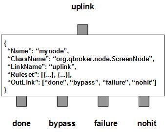

ScreenNode is a filter node that applies the screen operation on JMS messages according to their content and the predefined rulesets. Based on the filter, all the messages will be routed into four outlinks: done for the messages passing through the screening process, nohit for those messages do not belong to any predefined rulesets, failure for the messages failed at the screening process and bypass for the messages screened out. Since ScreenNode does not consume any messages, any incoming messages has to find a way out via one of the four outlinks.
ScreenNode contains a number of pre-defined rulesets. These rulesets categorize messages into non-overlapping groups. Therefore, each ruleset defines a unique message group. The ruleset also defines the screening options for the messages in each group as well as other parameters used in the screening process, such as TimeToLive and XAMode. With different screen options, ScreenNode withholds messages until their sessions time out. Therefore, each group maintains its own cache and the session to withhold messages temporarily. KeyTemplate is used to extract the keys from of the messages. These keys will be used to track the withheld messages in the cache. TimeToLive determines when to time out the session for the cache. Further more, ScreenNode always creates one extra ruleset, nohit. The ruleset of nohit is for all the messages not hitting any of the patterns.
ScreenNode will not consume any messages. But it may remove the withheld messages from the uplink for certain rulesets. If EXTERNAL_XA bit is set on the uplink, those removed messages will be acknowledged as well. Eventually, those removed and withheld messages will continue to propagate downstreams as usual. This feature is controlled by XAMode of the ruleset. If XAMode is not defined in a ruleset, the ruleset will inherit it from the node, which will be 1 by default. If it is set to 0, all the withheld messages for the ruleset will be acknowledged and removed from the uplink. There is a big consequence to disable XA on a ruleset. Please be extremely careful if you wnat to disable XA on any ruleset.
Here are considerations on when to disable XA on a ruleset. First, you may want ScreenNode to withhold more messages than the capacity of the uplink. Second, the source JMS servers may not be able to handle large amount of unacknowledged messages. In these cases, XAMode of certain rulesets may be set to zero explicitly to disable the XA. As you know, most of the JMS vendors implement message acknowledgement via sessions. The acknowledgement by ScreenNode may upset the XA control of the message flow.
ScreenNode is also able to monitor the load level report of its first outlink if the report is defined. If the load is high, all cache sessions on will be frozen. It means ScreenNode will ignore all TTLs and will treat all cache sessions without expirations.
You are free to choose any names for the four fixed outlinks. But ScreenNode always assumes the first outlink for done, the second for bypass, the third for failure and the last for nohit. Any two or more outlinks can share the same outlink name. It means these outlinks are sharing the same output channel.
Apart from the common properties, there are some implementation specific properties for ScreenNode.
| Property Name | Data Type | Requirement | Description | Examples |
|---|---|---|---|---|
| SessionSize | integer | optional | max number of messages cached in the session | 102400 (default: 0) |
| Heartbeat | integer | optional | interval in sec to check sessions | 30 (default: 60) |
| Threshold | 3 integers delimited by commas | optional | thresholds for the cache to be disfragmented | 50,100,200 |
The screen operation is executed via the pre-defined rulesets. Therefore, the configuration of the rulesets is critical to the operations of ScreenNode. Here are complete properties of rulesets for ScreenNode.
| Property Name | Data Type | Requirement | Description | Examples |
|---|---|---|---|---|
| Name | alphanumeric with no spaces | mandatory | name of the ruleset | event |
| TimeToLive | integer | optional | seconds to expire the session | |
| ScreenOption | string | optional | type of screen process | first_last |
| XAMode | integer | optional | flag for XA | 1 |
| FieldName | string | mandatory for numbers or time only | field name to screen on number or time | |
| DataType | string | optional | data type of the field | string |
| TimePattern | string | optional | time pattern for the field | |
| KeyTemplate | string | optional | template for the unique key | ##site## |
| KeySubstitution | string | optional | text subsctitution for the unique key | s/^0// |
| PreferredOutLink | alphanumeric with no spaces | mandatory for bypass only | name of the preferred outlink | bypass |
| JMSPropertyGroup | list | optional | list of pattern groups on properties to select messages | see example |
| XJMSPropertyGroup | list | optional | list of pattern groups on properties to exclude messages | see example |
| PatternGroup | list | optional | list of pattern groups on body to select messages | see example |
| XPatternGroup | list | optional | list of pattern groups on body to exclude messages | see example |
| StringProperty | map | optional | for setting the user properties on the messages | see example |
{
...
"Ruleset": [{
"Name": "bypass",
"PreferredOutLink": "BYPASS",
"JMSPropertyGroup": [{
"JMSType": "^score$"
}]
}],
...
}
where it sends the messages to the outlink of BYPASS without processing them.
Here is an example of the screen ruleset.
{
...
"Ruleset": [{
"Name": "max_job",
"JMSPropertyGroup": [{
"messageType": "8"
}],
"TimeToLive": "300",
"FieldName": "count",
"DataType": "integer",
"ScreenOption": "max",
"KeyTemplate": "##site##/##hostname##"
}],
...
}
where the rule only routes the messages with max count to out. The session
is 5 min.
Here is an example of ScreenNode:
{
"Name": "node_screen",
"ClassName": "org.qbroker.node.ScreenNode",
"Description": "screening messages in various minutes",
"Operation": "screen",
"LinkName": "buffered",
"Capacity": "256",
"DisplayMask": "0",
"Debug": "1",
"Heartbeat": "30",
"SessionSize": "256",
"Threshold": "0,50,100",
"Ruleset": [{
"Name": "ten_min",
"TimeToLive": "600",
"KeyTemplate": "##JMSType##",
"ScreenOption": "first_last",
"JMSPropertyGroup": [{
"JMSType": "^sport/archive/fannation/xml$"
}]
},{
"Name": "five_min",
"TimeToLive": "300",
"KeyTemplate": "##JMSType##",
"ScreenOption": "first_last",
"JMSPropertyGroup": [{
"JMSType": "."
}]
}],
"OutLink": [{
"Name": "root",
"Capacity": "12",
"Partition": "8,4"
},{
"Name": "null",
"Capacity": "256",
"Partition": "0,256"
}, "root", "root"]
}